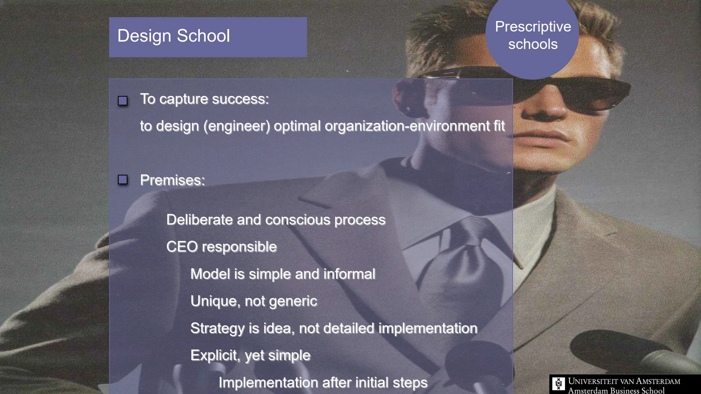

The framework
| School | Central idea and actor | Important limitation |
|---|---|---|
| Design | Achieve a fit between internal strengths and the environment; the CEO is the principal designer. | Separating thought from action can obstruct learning. An explicit design may reduce flexibility. |
| Planning | Formalize strategy through a structured process; planners support the CEO. | Detailed analysis can become paralysis, and planning can become detached from action. |
| Positioning | Select a defensible competitive position through analysis of industry and generic strategies. | Economic analysis may overlook politics, cognition and emerging opportunities. |
| Entrepreneurial | Strategy develops around an entrepreneur's vision, intuition and experience. | Direction can become heavily dependent on one leader's perspective. |
| Cognitive | Mental maps, bounded rationality and dominant logic shape strategic interpretation. | Experience can become a filter that prevents managers from seeing change. |
| Learning | Strategy emerges through experimentation, incremental action and collective learning. | Learning requires interpreting evidence; repetition alone does not establish that a belief is correct. |
Key distinctions
A framework for comparing frameworks
The six schools address different aspects of strategy. A positioning analysis may explain a market choice; a learning perspective may explain how the organization discovered it. The opening lecture explicitly rejects the idea that any one school captures all strategy formation.
Dominant logic
Managers develop shared mental maps through experience in a core business and may carry them into new businesses. These maps simplify complexity, but can also create inertia. Renewal may therefore require unlearning a previously successful formula.
How to use it
- Identify whether the question concerns strategic content, a decision process or organizational learning.
- Use one lens to develop an explanation and another to challenge it.
- State the assumptions that would make the chosen lens inappropriate.
Keep in mind
Prescriptive does not mean correct and descriptive does not mean unstructured. The distinction concerns the purpose of the theory.
Why compare several schools?
Reveal the explanation
They highlight different mechanisms and expose one another's blind spots.
Read the classroom original
Complete pages from the supplied lecture slides. Select a page to read, enlarge or browse its extracted text. Page numbers refer to the PDF’s physical page order.

 SESSION 1 · PAGE 26
SESSION 1 · PAGE 26Design school critique
 SESSION 1 · PAGE 29
SESSION 1 · PAGE 29Planning school premises
 SESSION 1 · PAGE 32
SESSION 1 · PAGE 32Planning school critique
 SESSION 1 · PAGE 35
SESSION 1 · PAGE 35Positioning school premises
 SESSION 1 · PAGE 47
SESSION 1 · PAGE 47Positioning school critique
 SESSION 1 · PAGE 48
SESSION 1 · PAGE 48Prescriptive schools compared
 SESSION 1 · PAGE 54
SESSION 1 · PAGE 54Entrepreneurial school
 SESSION 1 · PAGE 60
SESSION 1 · PAGE 60Cognition and bounded rationality
 SESSION 1 · PAGE 61
SESSION 1 · PAGE 61Dominant logic
 SESSION 1 · PAGE 62
SESSION 1 · PAGE 62Unlearning success formulas
 SESSION 1 · PAGE 67
SESSION 1 · PAGE 67Learning school
 SESSION 1 · PAGE 68
SESSION 1 · PAGE 68Managerial learning
 SESSION 1 · PAGE 75
SESSION 1 · PAGE 75